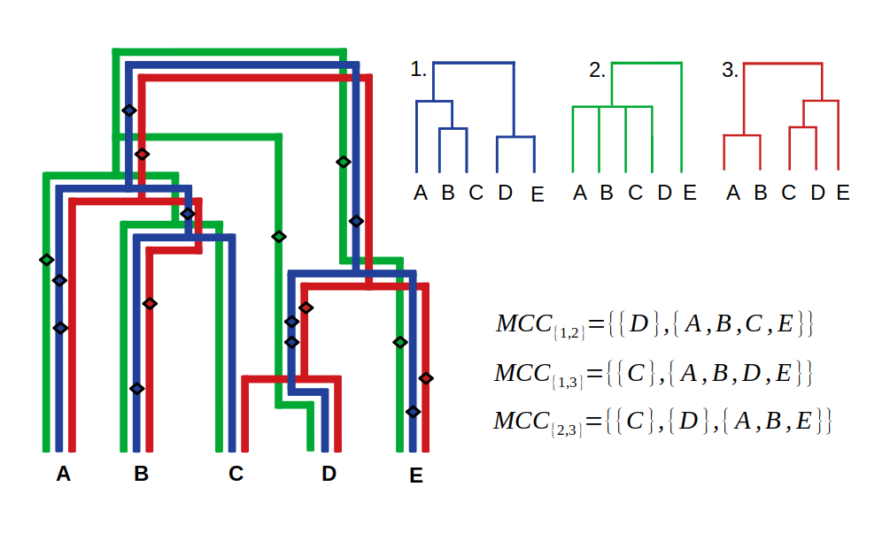

MultiTreeKnit
TreeKnit can be used to infer reassortment events between multiple tree pairs. When reassortment events between three or more trees should be inferred, TreeKnit uses a recursive inference strategy to:
- resolve each tree using information from all other trees in a consistent manner,
- identify shared regions of each tree pair (MCCs),
- find reassortment events between tree pairs.
The following example illustrates the benefits of this inference strategy over running TreeKnit individually on all tree pairs. Note however, that MultiTreeKnit may still return MCCs that are inconsistent with each other, which prevents the construction of an ARG. Therefore, we do not reconstruct an ARG for more than two trees.
In the overview section, we described two versions of TreeKnit, differing by the number of inference rounds. The first version, the :better_trees method is the default method for $K>2$ trees. It has been optimized for using multiple reassorting segments to infer parameters of pathogen evolution. We optimized for sensitivity in MCC inference and polytomy resolution, minimizing the false positive rate for shared branches and new splits, but increasing the false negative rate, i.e. typically inferring too many reassortment events.
In the following section we shall explain the differences between the two methods, using a three tree example.
MultiTreeKnit Example

The figure shows an ARG, of three tree segments, marked by their respective colors. The real MCCs of the trees are visible on the lower right. Mutations on the tree segments are marked with diamonds, the 2. segment has less mutations and is thus not fully resolved.
You can follow along in the repl with the commands:
using TreeKnit, TreeTools
t1 = parse_newick_string("((A,(B,C)),(D,E));"; label="t1");
t2 = parse_newick_string("((A,B,C,D),E);"; label="t2");
t3 = parse_newick_string("((A,B),((C,D),E));"; label="t3");
not all branch lengths known, assuming identical branch lengths
_________________________ A
________________________|
| |_________________________ B
_|
| _________________________ C
| ________________________|
|________________________| |_________________________ D
|
|_________________________ E
The --better-trees method
- All trees are compatibly pre-resolved with each other (this can be deactivated with the
--no-pre-resolveflag). In this case no additional splits can be added. For example, we try to add the $(B, C)$ and the $(A, B, C)$ intotree_2but as the two splits are not compatible withtree_3they will not be introduced. - Run
1round of standardTreeKnitwithout resolution on all tree pairs. As trees are not further resolved this can be fully parallelized. Note that $MCC_{\{1,2\}}$ and $MCC_{\{2,3\}}$ will not be properly inferred without resolution. Potential inferred $MCC_{\{1,2\}}$ are:
\[MCC'_{\{1,2\}} = \{\{A\}, \{D\}, \{B, C, D, E\}\}\]
\[MCC'_{\{1,2\}} = \{\{B\}, \{D\}, \{A, C, D, E\}\}\]
\[MCC'_{\{1,2\}} = \{\{C\}, \{D\}, \{A, B, D, E\}\}\]
- Ladderize the first tree and sort all polytomies according to to this tree to allow for visualization as a tanglegram.
In this example the trees will not be further resolved, leading to no inaccurate splits being introduced.
This is called in the repl via the command:
MCCs = run_treeknit!([t1, t2, t3], OptArgs(3;method=:better_trees));MCC_set(3, ["t1", "t2", "t3"], Dict{Set{String}, Vector{Vector{String}}}(Set(["t3", "t1"]) => [["C"], ["A", "B", "D", "E"]], Set(["t2", "t1"]) => [["B"], ["D"], ["A", "C", "E"]], Set(["t3", "t2"]) => [["A"], ["B"], ["C", "D", "E"]]))The --better-MCCs method
- All trees are compatibly pre-resolved with each other (this can be deactivated with the
--no-pre-resolveflag). As before no additional splits can be added. - Run
1round of standardTreeKnitwith strict resolution on all tree pairs. As trees are further resolved this must be done in a specific ordering and can only be partially parallelized (see consistent resolution). As we choose the input order of trees as the order to compute MCCs and resolve trees in we first compute $MCC_{\{1,2\}}$, then $MCC_{\{1,3\}}$ and lastly $MCC_{\{2, 3\}}$.
- If the SA converges we will infer the correct MCC for $MCC_{\{1,2\}}$. Note the $(B, C)$ and the $(A, B, C)$ split will not be added as we are using strict resolution and the order of the reassortment and the recombination event cannot be determined from trees. I.e. as $D$ is in a different location in
tree_1its location intree_2cannot be inferred fromtree_1, and the splits $(B, C, D)$ and $(A, B, C, D)$ as well as the splits $(B, C)$, $(B, C, D)$ and $(A, B, C, D)$ are also possible. This is what we refer to as an ambiguous split.
julia> t1 = parse_newick_string("((A,(B,C)),(D,E));"; label="t1");julia> t2 = parse_newick_string("((A,B,C,D),E);"; label="t2");julia> t3 = parse_newick_string("((A,B),((C,D),E));"; label="t3");julia> rS = resolve!(t1, t2, [["D"],["A", "B", "C", "E"]])2-element Vector{TreeTools.SplitList{String}}:julia> isempty(rS[2])true
- If the SA converges we shall infer the correct $MCC_{\{1,3\}}$
- We then compute $MCC_{\{2,3\}}$, if the SA converges we will infer $MCC_{\{2,3\}} = \{\{E\}, \{A, B, C, D\}\}$
there is only one way to resolve tree_2 to have such an MCC with tree_3 and we will introduce the splits $(A, B)$ and $(C, D)$ in tree_2.
julia> rS = resolve!(t2, t3, [["E"], ["A", "B", "C", "D"]])2-element Vector{TreeTools.SplitList{String}}: ["A", "B"] ["C", "D"]julia> isempty(rS[1])false
- Run a second round of pair-wise
TreeKnitwithout resolution, this is required to make sure that all output MCCs are actually MCCs. Note for example that $MCC_{\{1,3\}}$ is no longer an MCC now thattree_2has been further resolved. Not only are the MCCs less accurate in this example, we have added incorrect splits totree_2. (Note that iftree_2still had the $(A, B, C)$ split this approach would have potentially correctly resolved trees and inferred the correct MCCs, however on average the first approach outperforms this approach). A potential MCC output for this example would be:
\[MCC'_{\{1,2\}} = \{\{C\}, \{D\}, \{A, B, E\}\}\]
\[MCC'_{\{1,3\}} = \{\{C\}, \{A, B, D, E\}\}\]
\[MCC'_{\{2,3\}} = \{\{E\}, \{A, B, C, D, E\}\}\]
- Ladderize the first tree and sort all polytomies according to to this tree to allow for visualization as a tanglegram.
This is called in the repl via the command:
MCCs = run_treeknit!([t1, t2, t3], OptArgs(3;method=:better_MCCs));MCC_set(3, ["t1", "t2", "t3"], Dict{Set{String}, Vector{Vector{String}}}(Set(["t3", "t1"]) => [["C"], ["A", "B", "D", "E"]], Set(["t2", "t1"]) => [["B"], ["D"], ["A", "C", "E"]], Set(["t3", "t2"]) => [["C", "D"], ["A", "B", "E"]]))Consistent resolution

When TreeKnit is run individually on all tree pairs trees could be resolved inconsistently. By default TreeKnit resolves trees when searching for reassortment events, this is especially important for influenza where resolution is often low and not resolving trees can lead to much higher rates of reassortment being inferred.
We explore the small example, seen above. First let us look at what would happen if standard pair-wise TreeKnit was run on all tree pairs with resolution. When the MCCs of tree a and tree c are computed no reassortment events would be found as tree c would be resolved according to tree a (i.e. a branch would be introduced above leaves A and B). However, when the MCCs of tree b and tree c are computed tree c would be resolved according to tree b and a branch would be introduced above leaves B and C. These two different resolutions of tree c are incompatible with each other and do not allow us to use this reassortment event information together.
In our default version of TreeKnit, the so called :better_trees method, we would first try to pre-resolve all trees using each other. In this case, as the $(A, B)$ and the $(B, C)$ split are not compatible, we do not know which to introduce into tree c and thus we would not introduce any new splits. We would then compute all MCC-pairs without resolution, which would mean inferring reassortment events between all trees.
The other approach would be to choose to resolve tree c with tree a OR with tree b, inferring less reassortment events, which is more likely to be true. However, we have no information which tree we should use to resolve tree c.If we use the :better_MCCs method of TreeKnit, TreeKnit will perform 2 rounds of inference, resolving trees using tree order in the first round of inference. The order that pairs are resolved in is shown in the picture below

Here $T_{1,2}$ corresponds running pair-wise TreeKnit with the resolve=true flag and outputting the resolved tree 1 and tree 2. These resolved trees are then used to calculate the MCCs of the next neighboring tree pairs (which are connected by arrows). This means that after calculating the MCCs for tree 1 and tree 2 and resolving their polytomies using each other, instead of using the original tree 1 the resolved tree 1 is then further used when calculating the MCCs between tree 1 and tree 3. Leading to a consistent tree resolution.
Furthermore, we use strict resolution when resolving trees with MultiTreeKnit. Strict resolve will only resolve polytomies if the location of each branch in the new split can be fully determined by the other tree. Using strict resolve prevents the introduction of incorrect splits into the trees, this is especially important when resolved trees are used downstream for inference as these splits could prevent the simulated annealing from converging.
At the end of the sequential inference on all tree pairs, each tree will be resolved as much as possible using each other tree. However, the output MCCs might not be consistent with each other and might not fulfill the necessary transitivity requirements to create an ARG (see consistent MCCs).
Furthermore, it can occur that the MCCs inferred for the tree pairs that were calculated at the start of the round are no longer MCCs (see the example above). We prevent this from happening, and make sure that all MCCs that are inferred are actual MCCs by running a final round where we re-infer all tree pair MCCs without resolving trees. However, the MCCs might still not fulfill all necessary consistency conditions to produce an ARG.
Consistent MCCs
When TreeKnit is run individually on all tree pairs the final MCCs might be inconsistent with each other. This was seen in the example above when TreeKnit is run on these tree pairs individually not only are the trees resolved in an incompatible manner the transitivity of the MCCs is also broken. Let us further explore this example. If no reassortment has occurred between leaves A and B in tree a and tree c and no reassortment has occurred between these leaves in tree b and tree c, reassortment cannot have occurred between A and B in tree a and tree b. However, there has clearly been a reassortment event between trees tree a and tree b.
However, fixing resolution issues as described above does not necessarily fix transitivity. TreeKnit uses simulated annealing and removes branches at random. This means that even if tree c is now resolved according to tree a and we infer that a reassortment event has happened between trees tree a and tree b as well as between trees tree c and tree b the MCCs that TreeKnit infers might be inconsistent with each other. For example look at the following MCCs:
{
"MCC_dict" : {
"1": {
"trees":["a", "b"],
"mccs": [["A"],["B","C"]]
},
"2": {
"trees":["a", "c"],
"mccs": [["A","B","C"]]
},
"3": {
"trees":["b", "c"],
"mccs": [["A","B"],["C"]]
}
}
}These MCCs show that no reassortment has occurred between leaves B and C in tree a and tree b and no reassortment has occurred between these leaves in tree_a and tree_c. Thus, for transitivity to hold reassortment cannot have occurred between B and C in tree b and tree c. But this is not the case. Such inconsistencies make it impossible to visualize an ARG. Currently, we are not able to fully fix such incompatibilities.
Parallel MultiTreeKnit
For 3 or more trees the --parallel flag can be used to run TreeKnit in parallel. When the :better_trees method is used and MCCs are inferred for tree pairs without further resolving trees, we can fully parallelize all calls of standard pair-wise TreeKnit on all $\frac{K(K-1)}{2}$ tree pairs (where $K$ is the number of trees). However, when the :better_MCCs method is applied and trees are additionally resolved in the first round of pair-wise TreeKnit, an ordering of jobs is required. This ordering can be easily determined from the recursive order graph. By running trees in parallel we can improve run time from order $K^2$ to $K$, where $K$ is the number of trees.
For example, in order to compute the MCCs of tree 1 and tree 4 or $T_{1,4}$ we must have calculated $T_{1,2}$ and $T_{1,3}$. In order to compute the MCCs of tree 2 and tree 3 we also need $T_{1,2}$ and $T_{1,3}$ but we do not need to know $T_{1,4}$. Thus, $T_{1,4}$ and $T_{2,3}$ can be calculated at the same time, $T_{2,4}$ must wait for $T_{1,4}$ and $T_{2,3}$ to finish, and $T_{3,4}$ must in turn wait for $T_{2,4}$. Thus, the arrows in the recursive order graph also determine the work flow in parallel computing. As can be seen the longest path is from $T_{1,2}$ to $T_{1,4}$ and then down to $T_{3,4}$, and is of length $2K - 2$, whereas there are a total of $\frac{K(K-1)}{2}$ pairs which would mean a quadratic runtime without parallelization.
Per default the --parallel flag is set to false to avoid potential platform issues. When using TreeKnit on a larger computing cluster it is best practice to set the desired number of cluster nodes to 1, and cpu number on that node as high as desired.